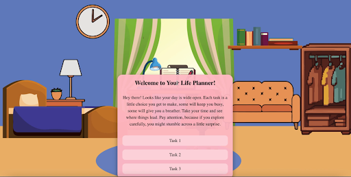
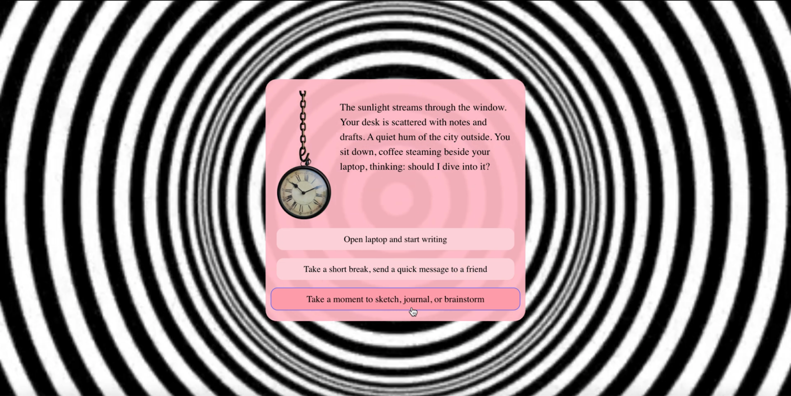
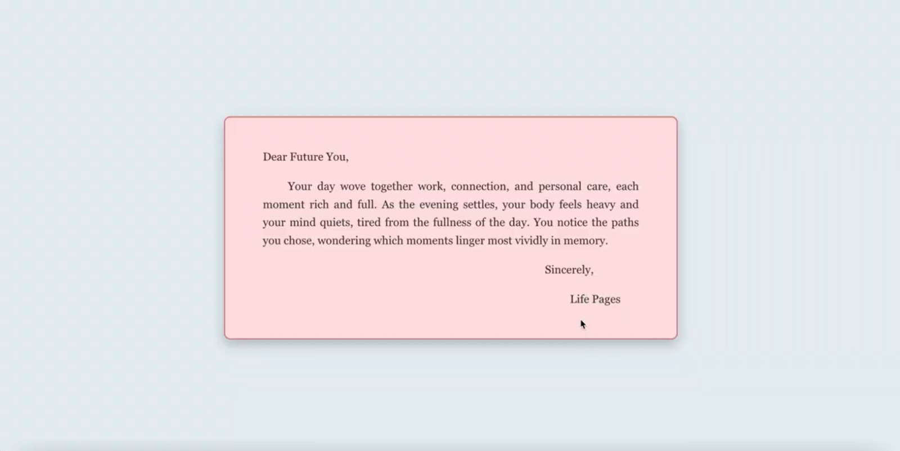

Your Life Pages lets users take control of their accelerated time by making choices across work, social, and
personal tasks, ultimately revealing how their habits shape the course of their life.



Description
In the world of Your Life Pages, people have a little more control over their time, but every
choice comes with trade-offs. This interactive world explores how everyday decisions quietly shape the life
we end up living, even though time is always finite.
Users receive a simple life planner with three tasks: work, social connections, and personal joy, and make
choices that feel natural to their habits. Spending more time on one task brings greater reward in that area
but leaves less time for the others.
Once a task is completed, it is locked, reflecting the irreversibility of time. At the end, users receive a
letter showing the life they have created, encouraging reflection rather than judging their decisions.
Technical Approach
Skills: React.js, Adobe Illustrator, CSS Grid
I built Your Life Pages using React.js, with state variables tracking user choices and controlling
page transitions, background updates, and endings. CSS Grid made objects in the background clickable,
revealing subtle reflections, while Adobe Illustrator provided the custom visual environments.
The interactive experience responds dynamically to user decisions, including task completion and time
extensions, and integrates adaptive audio to reinforce the passage of time.